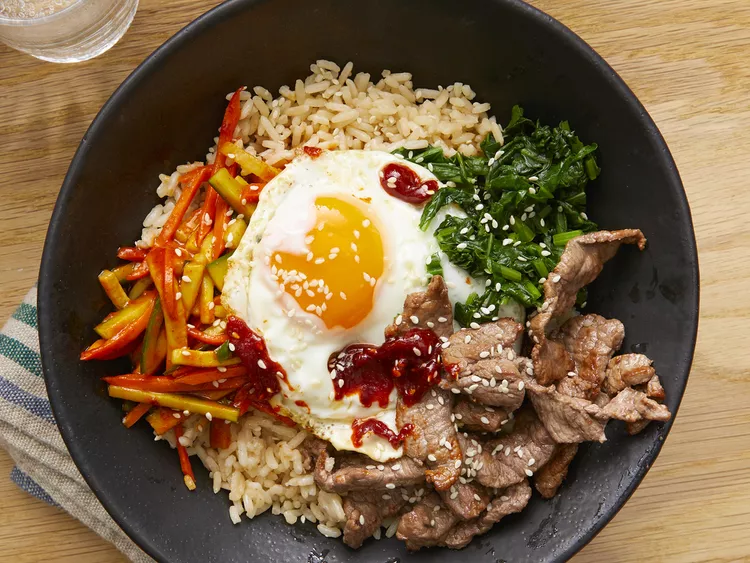

Bibimbap

Description
This bibimbap recipe makes a popular and delicious Korean meal. Meaning mixed rice,
bibimbap is a delicious rice bowl topped with vegetables, beef, a whole egg, and gochujang (red chili pepper paste).
Traditionally, bibimbap was eaten on the eve of the Lunar New Year, to use up any leftovers
before the start of the new year.
Ingredients
- 1 English cucumber, cut into matchsticks
- ¼ cup gochujang (Korean hot pepper paste) (Optional)
- 1 bunch fresh spinach, cut into thin strips
- 1 tablespoon soy sauce
Steps
- Stir together cucumber pieces and gochujang paste in a bowl; set aside.
- Bring about 2 cups water to a boil in a large nonstick skillet and stir in spinach;
cook until bright green and wilted, 2 to 3 minutes.
- Drain spinach and squeeze out as much moisture as possible; set spinach aside in a bowl and stir in soy sauce.
- Heat 1 teaspoon olive oil in a large nonstick skillet; cook and stir carrots until softened, about 3 minutes.